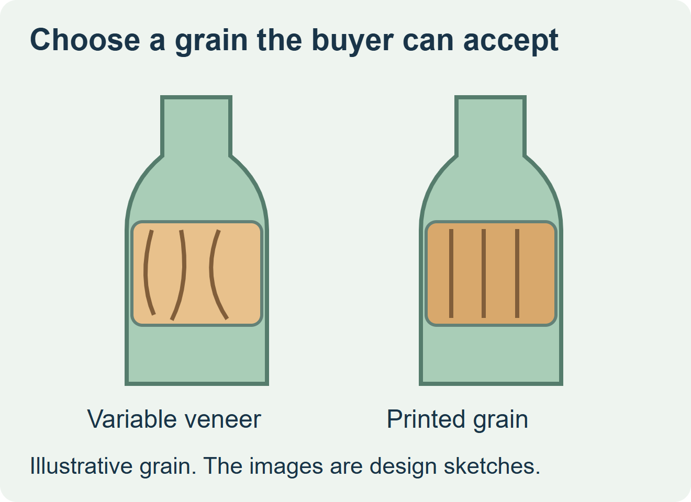
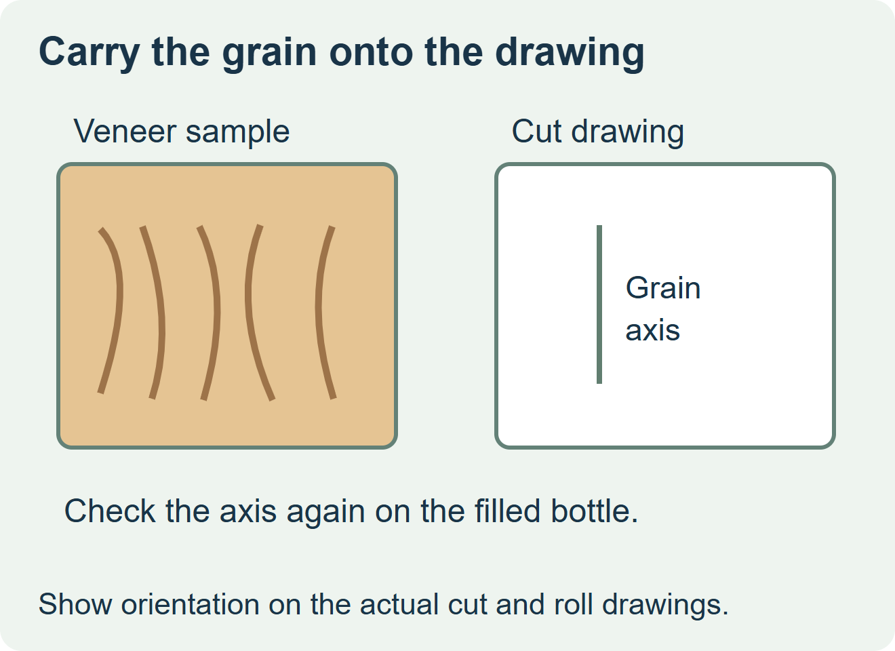

Quote printed grain when a consistent wood look is the priority. Compare real veneer when genuine grain, natural variation and a particular feel are part of the brief. For a veneer order, approve a range of decorated bottles and the grain direction on the final cut. A single attractive swatch cannot define the order.


Decide which differences the winery will accept
Ask for actual printed samples across the proposed shade and grain range. Mark which darker streaks or other natural features are acceptable in the brand field and which would obscure a line of copy. A centered mark on the lightest sample may become hard to read over a darker patch. If the winery needs a predictable pattern and color, compare a print on a supported paper or film before paying to develop a wood construction.
Avery Dennison’s bulletin on its birch and cherry veneer materials identifies a real wood face laminated to a carrier, variation in grain and shade, and grain-related converting and application considerations. It describes experience with named materials under tested conditions. Use it to ask about the exact proposed stock, rather than ordering another veneer to the same assumptions. Avery Dennison wood veneer technical overview
| Requested appearance | Specimen to approve | Decision at release |
|---|---|---|
| Even color and a deliberately repeated pattern | Printed grain on the actual proposed label face | Agree the printed color, detail and acceptable variation for that construction. |
| Real grain with deliberately visible natural variation | Light and dark representative veneer samples with the finished print | Approve the range and show where natural features can sit around critical print. |
| Genuine veneer with foil, relief or a wet-service requirement | Completed proposed veneer construction on the actual bottle | Approve the required appearance and handling with the intended decorations and exposure. |


Keep grain direction visible through converting and application
Ask the converter to mark the grain on the cut drawing and carry that reference onto a finished roll diagram and bottle sample. Discuss any change in how the art is nested or rewound before a purchase release. A flipped or rotated proof can change both the appearance and the direction in which the stock bends on the glass. Ask for the proposed complete construction and whether the intended die, labeler and finish can be qualified together.
For a hypothetical winery release, a pale wood face and dark crest look convincing on one proof. A second approved-range sample has a dark streak through part of the crest. Either move or change the critical feature, or compare the more repeatable printed-grain route. Judge the result in the intended display light and, if required, after chilling and handling on the actual bottle.
Compare both offers at the same finished-label scope
Request a clearly identified face, adhesive, liner, printing, finishing, tooling and usable quantity. Clarify how suppliers will handle natural variation and any marked gaps or rejected labels. Keep enough identified samples to represent the accepted range at reorder. Confirm available specialty stock and conversion capability for the project.
Discuss the unresolved label requirement
Send the target wood-look reference, exact bottle, cut dimensions, printed details and finish, application route, service conditions and quantities. Review custom wine labels and prepare a label specification inquiry. The contact page opens an email draft and lists email or WhatsApp for attachments. Supply, proof options, testing, pricing and timing require project confirmation.